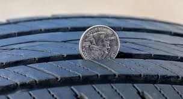
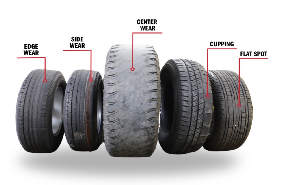

Tire Tread
Checking tire tread is always useful, and can tell you if you'll need to change your tires, rotate, or if theres underlying suspension issues.

Measuring Tread
Measuring tread is a simple and quick way to keep you tires in check. All you need to do is grab a penny, have Lincoln's hair face down, and if you can't see all of his head then you are good! If you do see all of is head, it's time to get new tires buddy.

Rotating Tires
Types of tire wear can display different underlying problems which is a good thing to keep an eye out for when buying a car. Depending on how it is worn shows worn suspension components. If you want specifics read here.